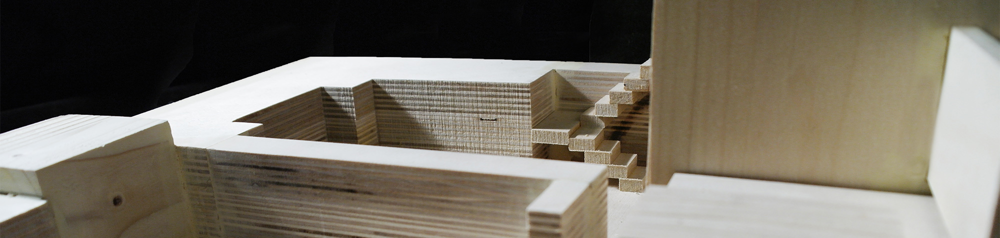

Wedding Pavilion on Lake Erie
Welcome to Andrew's website. Andrew Chong is an architecture student studying at Carnegie Mellon University's School of Architecture. He is currently a first year student on a five year program for a bachelor's degree in architecture. This website will showcase Andrew's work from his time at Carnegie Mellon. Click either image above or to the right, or click on the projects tab on the navigation bar to explore his work.